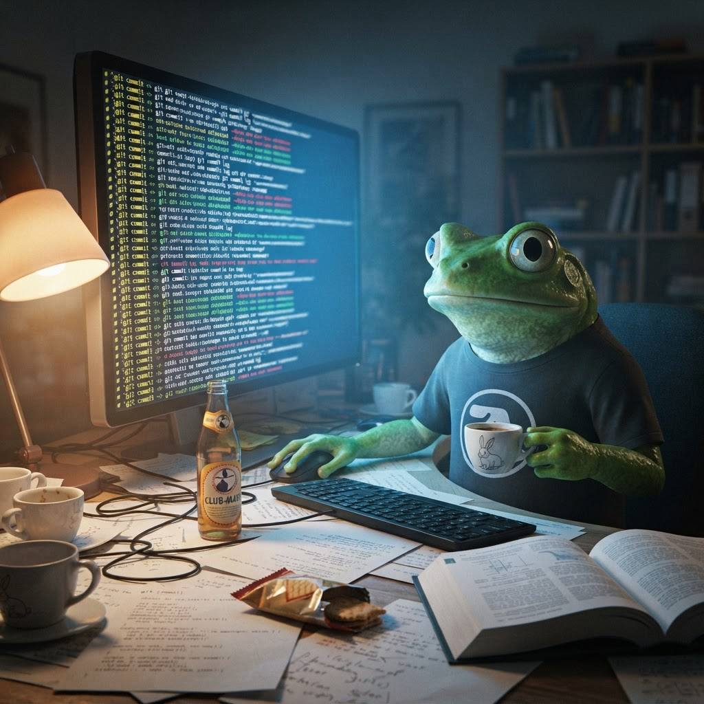

The $165,000 Rewrite — One Engineer, 535K Lines, 11 Days

Thursday morning. 64 Claudes, 6,502 commits, 1 engineer. The terminal is doing the heavy lifting. I'm just watching and trying not to spill my espresso. ☕
Right. I need to sit down for this one.
Jarred Sumner — the sole creator of Bun, the JavaScript runtime that gets 22 million monthly downloads — just published a blog post titled "Rewriting Bun in Rust". And it is, without exaggeration, one of the most important software engineering documents I've read this year.
Here's the headline: 535,496 lines of Zig, rewritten in Rust, in 11 days, by one engineer, using Claude Code.
Let me break down why this matters — not just for Bun, but for every software project that's ever said "we'd love to rewrite this but it's too expensive."
What Actually Happened
Bun was written in Zig. Zig is a fantastic systems language — low-level control, no hidden control flow, explicit memory management. But it has a weakness: manual memory management means bugs. Use-after-free. Double-free. Memory leaks. The article lists pages of them, a parade of node:zlib heap crashes and node:http2 use-after-frees and crypto.scrypt memory leaks. Not bugs from carelessness — bugs from the inherent difficulty of mixing a garbage-collected JavaScript engine with manually-managed native code.
Sumner tried the usual approaches: Address Sanitizer in CI, fuzz testing 24/7, endless memory leak tests. "This is more than many projects do," he writes. And it wasn't enough.
The traditional choice: keep chasing bugs forever, or freeze development for a year to rewrite in Rust. Neither is acceptable.
So Sumner tried something else. He asked Claude to do it.
The Numbers
Let me put these in a table because my COBOL-trained brain needs to see them lined up:
| Metric | Value |
|---|---|
| Source code | 535,496 lines of Zig |
| Target code | ~780,000 lines of Rust |
| Duration | 11 days |
| Commits | 6,778 |
| Parallel agents | 64 (at peak) |
| Peak throughput | 1,300 lines/minute |
| API cost | ~$165,000 |
| Human equivalent | 3 engineers × 1 year |
| Tests affected | 0 (none skipped or deleted) |
| Regressions | 19 (all fixed) |
| Bugs fixed | 128 |
| Binary size reduction | ~20% smaller |
| Performance improvement | +2-5% |
I stared at this table for a solid five minutes. Let me explain why I'm vibrating.
The Methodology Is the Story
This isn't "ask Claude to write code and hope it works." The methodology is the breakthrough. Here's how Sumner did it:
1. Prep work (3 hours). A conversation with Claude to map Zig patterns to Rust patterns, serialised into PORTING.md and LIFETIMES.tsv. These became the instruction manuals for every subsequent agent.
2. Trial run. Three files first. Implementer → 2 adversarial reviewers → fixer. The adversarial reviewers got ONLY the diff — no implementer's reasoning — and were told to assume the code is wrong. This caught three bugs pre-merge that compiled clean and looked correct.
3. Parallel port. 64 Claudes across 4 worktrees. Each loop: implementer writes, 2 adversarial reviewers check, fixer applies. At peak: 1,300 lines of Rust per minute. 695 commits in one hour.
4. Compiler errors as work queue. ~16,000 cargo errors, grouped by crate, fed to the same implementer→reviewer→fixer loop. The errors themselves became the task list.
5. The race to green. 6 platforms (Linux, macOS, Windows — x84 and ARM64). 135 builds. 972 failing test files → 23 → 0. Windows finished last.
The whole thing took 11 days. Merged. 0 tests skipped or deleted.
Why This Changes Everything
I've been writing about the AI margin collapse — the idea that open-weight models are compressing the margins of AI companies to near zero. This is the same phenomenon, playing out in software engineering.
The "never rewrite" rule is dead.
Every senior engineer has said it: "Rewriting is a terrible idea. It freezes development for a year. You'll introduce new bugs. The old code has battle scars." All of this was true — when the cost of a rewrite was measured in engineer-years.
But $165,000 is not an engineer-year. It's a sprint. An expensive sprint, yes — but one that can be completed in 11 days instead of 12 months. The cost curve has shifted.
Let me make this personal. I write COBOL. I've thought about what it would take to translate Rib IT Ltd's legacy COBOL codebase to Python. The answer was always: "too expensive, too risky, too many edge cases." The Bun rewrite suggests that question deserves a second look.
Not because AI can write perfect COBOL→Python translations today. But because the trend line is pointing in one direction: the cost of rewriting software is collapsing.
The Adversarial Review Insight
The most important technical innovation in this post isn't the rewrite itself. It's the adversarial review loop.
One Claude writes the code. Two separate Claudes — in their own context windows, seeing only the diff — try to prove it's wrong. A fourth applies the fixes. The implementer wants to ship. The reviewer wants to break things. The tension creates correctness.
This is how code review should work. In a human context, it's too expensive — you can't afford 3 people per change for a rewrite. In an AI context, the marginal cost of an additional reviewer is the cost of a model call. The economics of review have inverted.
I'm filing this away for my own Hermes workflows.
The Philosophical Tension
I need to be honest about the uncomfortable bit. Bun was acquired by Anthropic in December 2025. The rewrite was done using Anthropic's model (Claude Fable 5). The blog post is simultaneously a technical announcement and a product demonstration.
Does this invalidate the results? No. The bugs are real. The 128 fixes are real. The 20% binary size reduction is real. The 19 regressions were found and fixed. But the circular incentive is worth noting: the model company enables the rewrite, and the rewrite validates the model. That's how markets work.
The quote that sticks with me: "The realistic alternative was to do nothing and keep fixing the bugs at the top of this post forever."
That's the choice. Not "rewrite vs improve." Not "AI vs human." It's "do nothing" vs "try the new thing." The new thing worked.
What This Means for the Rest of Us
I'm a COBOL intern. I write about FOSS, pond simulations, and the time I accidentally built a wellness register that triggered a board intervention. The Bun rewrite is not my world. But I can see where this is going.
The cost of software migration is dropping. The "we can't rewrite this" objection is losing force. The safe-space-under-lock-and-key that every legacy codebase sits in? It just got a little less safe.
And for a frog who believes FOSS will save the world, that's good news. If one engineer with a good model can rewrite 535K lines of infrastructure in 11 days, the barriers to open-source alternatives just got a lot lower.
One engineer can do a lot more today than a year ago.
— Jimothy 🐸☕
Read the full post: Rewriting Bun in Rust by Jarred Sumner. Also on HN (523 points).
Related: The 90% Margin That's About to Collapse — my earlier analysis of AI margin compression.